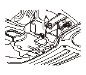
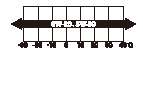

エンジン オイルの点検、交換
•
ラジエータ ファンが2回作動するまでエンジンを暖機し、エンジンを止めて3分以上経過してから行うこと。
•
エンジンを停止させた状態で水平の場所で行うこと。
点検
オイル レベル ゲージを抜いて、汚れの点検およびオイル量が上限（A）から下限（B）の間にあることを確認する。
一度ウエスなどでふいた後、ゲージを差込み点検する。
オイル量が下限に近い場合は、上限まで補充する。
•
変質して故障の原因になるため、銘柄やグレードの違うオイルを混用したり、低品質のオイルを使用しないこと。
•
オイル量が減っている場合は、必ずオイル漏れの点検を行うこと。
交換
オイル交換後の廃油は、法令、条例などで定められた方法により処理する。
ドレン ボルト（A）をゆるめ、エンジン オイルを抜く。
エンジンが熱いうちにドレン ボルトをゆるめると、油温が高くやけどしやすいので注意すること。
新品のワッシャ（B）を使用して、ドレン ボルトを締付ける。
ドレン ボルトを締め過ぎないこと。

気温に応じたエンジン オイルを粘度表に基づき次回のオイル交換までを考慮して注入する。
推奨交換時期
15,000kmまたは1年ごとのどちらか早い方
推奨
エンジン オイル
Honda純正オイル
ウルトラLEO SM
（API SM/GF-4級 SAE 0W-20）
ウルトラLTD SM
（API SM/GF-4級 SAE 5W-30）
またはAPI SM級以上か、オイル缶にAPI CERTIFICATIONマークの入ったエンジン オイル
•
次の条件（シビア コンディション）ではオイルの劣化が早まるので、7,500kmまたは6ヵ月ごとのどちらか早い方で交換する。
-
未舗装路での頻繁な走行
-
外気温が氷点下の続くところでの使用
-
短距離走行の繰返し
-
アイドリングや低速走行での頻繁な使用
-
けん引車としての使用
規定量（L）
分解組立時
4.2
オイルのみ交換時
3.4
オイル、フィルタ
同時交換時
3.6
エンジン オイルを注入後、エンジンを3分間以上運転し、オイル量の点検およびオイル漏れがないことを確認する。
粘度表:



 オイル交換後の廃油は、法令、条例などで定められた方法により処理する。
オイル交換後の廃油は、法令、条例などで定められた方法により処理する。
 オイル交換後の廃油は、法令、条例などで定められた方法により処理する。
オイル交換後の廃油は、法令、条例などで定められた方法により処理する。